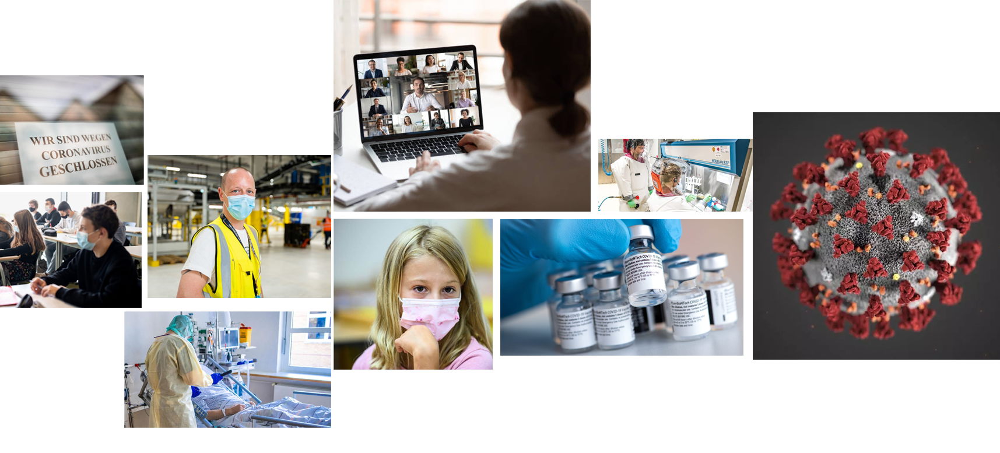

Wie wirkt sich die Corona-Pandemie auf die weltweite Wirtschaft aus?
Der erste Faktor ist, dass die steigende Anzahl von Erkrankten und Toten das Angebot der Arbeitskräfte minimiert und der zweite Faktor betrifft die Maßnahmen zur Eindämmung der Pandemie. Damit sind die Einschränkungen in der Veranstaltungs-, Gastronomie- und Reisebranche gemeint, die unter anderem zu der Zerstörung von Lieferketten beitragen.
Das Planspiel
CHANGEME!

Kernkomponenten
Zeitungsausschnitte
Arbeiten im Home-Office
Ein weiterer Punkt der zum Arbeitsausfall führen kann, ist wenn kein Homeoffice möglich ist. Gründe dafür könnten sein, dass man Kinder Zuhause hat die man betreuen muss, oder keine technischen Möglichkeiten hat um von Zuhause zu Arbeiten. Da man allerdings noch nicht genau sagen kann, wie lange diese Einschränkungen bestehen bleiben, weiß man auch nicht welche wirtschaftlichen und sozialen Abläufe sich daraus ergeben werden. Dies führt wiederum zu der Kaufzurückhaltung bei Haushalten und zu weniger Investitionen durch die Unternehmen, sprich die gesamtwirtschaftliche Nachfrage sinkt. Deutschland hat also einen Rückgang der Wirtschaftsleistung um mindestens 6 Prozent, wobei der Welthandel um 15 Prozent einbricht.